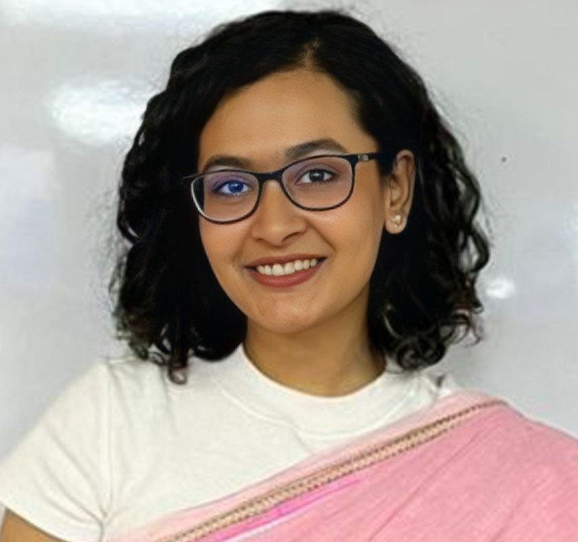

Skin lesion classification and segmentation with deep learning
Undergraduate research project at IIT, Jahangirnagar University, on automated analysis of skin lesion images.

B.Sc. in Information and Communication Technology
Jahangirnagar University
Hi! I recently completed my B.Sc. in Information and Communication Technology at the Institute of Information Technology (IIT), Jahangirnagar University.
I have built a foundation in C, C++, Python, Java, PHP and the web stack (HTML, CSS, JavaScript), and I have applied it in team projects. My research interest is deep learning for skin lesion classification and segmentation. I'm keen to keep learning and to work on varied, innovative projects, especially interdisciplinary ones that tackle real-world problems.
Undergraduate research project at IIT, Jahangirnagar University, on automated analysis of skin lesion images.
Institute of Information Technology, Jahangirnagar University · 2019 – 2024 · CGPA 3.76/4.00
Design concepts I am developing for graduate research. They are ideas and early plans, not finished products.
A recipe app for women with physical disabilities and for children and teens cooking with supervision: large touch targets, voice and one-tap control, seated and one-hand adaptations, and a kid-safe mode that flags hot or sharp steps for an adult.
A gentle plant-care app with easy starter plants, plain-language reminders and a short mood check-in, with no streak guilt and an offline-friendly design.
A diary for teen girls and women to record short audio, video or text entries that stay on the device, with optional sharing to one trusted person and no likes or comments.
I am interested in how everyday-activity technologies can support the wellbeing of women of different ages, incomes, abilities and mental-health conditions, using qualitative and co-design methods.